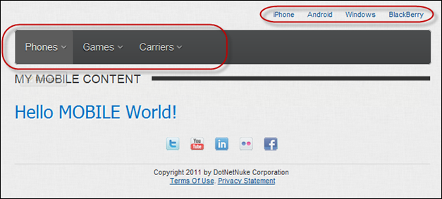
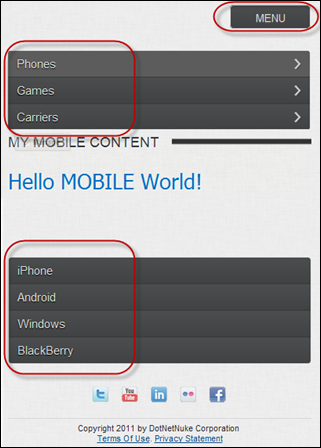
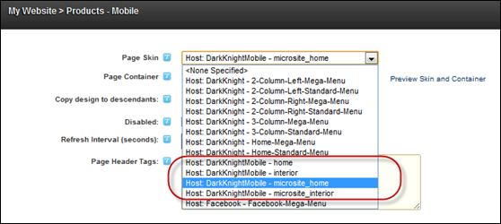
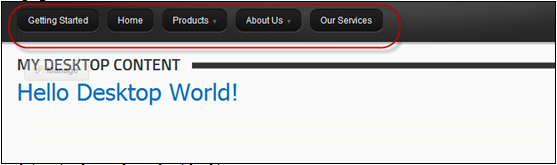
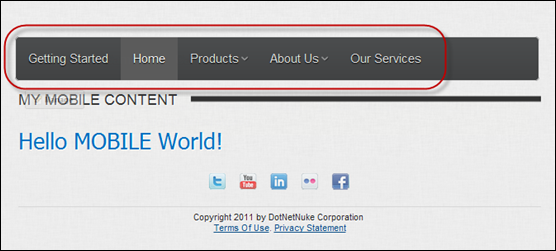

Products - Mobile is our parent mobile page for this MicroSite
A mobile site skin package called DotNetNuke.DarkKnightMobile is included with DNN. These skins are suitable for use for a mobile website. This skin package includes skin objects appropriate for an independent mobile website and skin objects that are appropriate for a mobile microsite.
Mobile Friendly Menu
The mobile friendly skin will present the website menu in two different styles in order to maximize the viewing experience on mobile devices.
Landscape Mode
For devices with a wide aspect ratio, the menu will show across the top of the page with the direct children pages showing as links above the main menu.

Portrait Mode
For devices with narrower aspect ratio, the menu will initially be hidden with a button which will expand to show the top level pages. Direct child pages will be shown in a stacked styled-menu at the bottom of the page.

Mobile Website
The mobile skin package will contain two types of mobile friendly skins, one for use with standalone mobile websites and one for use with microsites. The only difference between the two types of skins is what shows in the menu.

Standalone Mobile Website
Using the DarkKnightMobile - Home and DarkKnightMobile - Interior page skins. All pages of the website are shown in the mobile skin menu.


Website using DarkKnightMobile Skin for standalone mobile website shows ALL pages
MicroSite
Using the DarkKnightMobile - Microsite_Home and DarkKnightMobile - Microsite_Interior page skins.
Only child pages of the parent mobile page will show in the mobile skin menu.
Products - Mobile is our parent mobile page for this MicroSite

Mobile menu only shows the child pages of the Products-Mobile parent mobile page